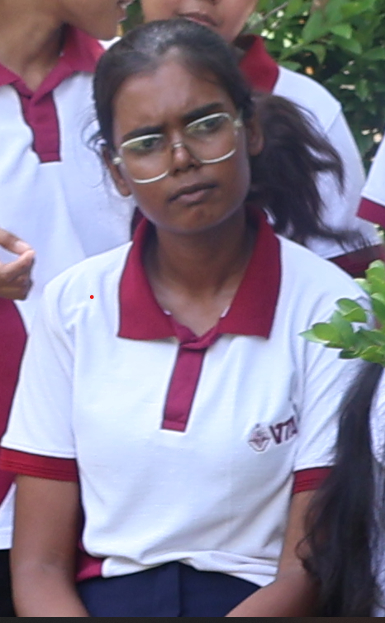
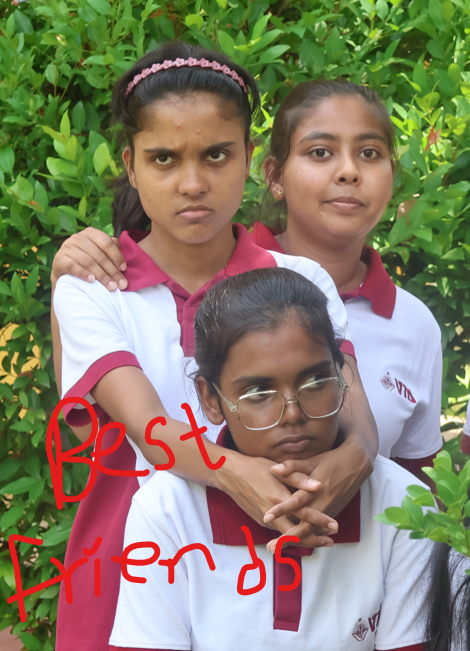
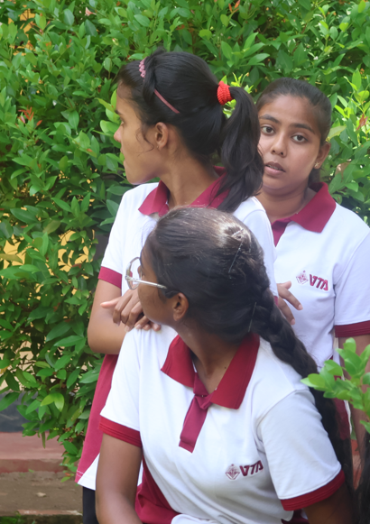
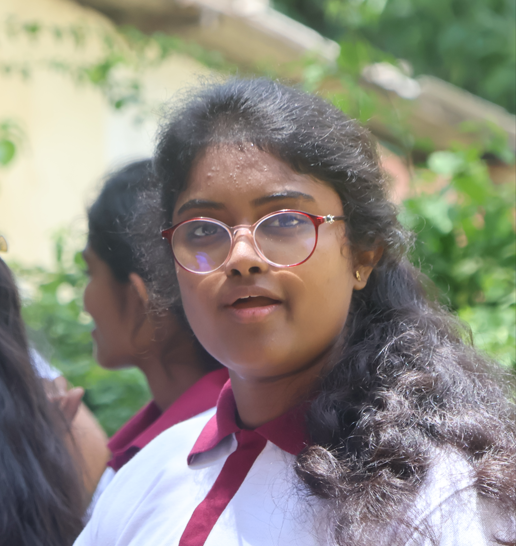
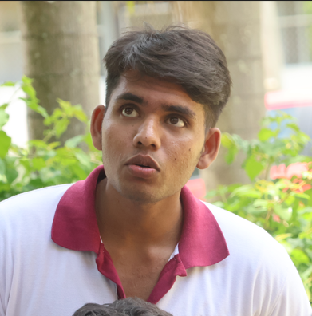
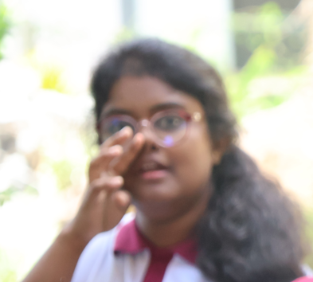

Current gallery: VTA ICT Level 5 Students
මෙම ඡායාරූප එකතුවෙන් පාසල් ජීවිතයේ සුන්දර හා අමතක නොවන මතකයන් කිහිපයක් නිරූපණය වේ. මිතුරන් අතර ඇති සමීපත්වය, සතුට සහ එකමුතුකම මෙම ඡායාරූපවලින් පැහැදිලිව දැකගත හැකිය. සමහර ඡායාරූපවල මිතුරන් එකට සිටින ආකාරයත්, තවත් ඡායාරූපවල පුද්ගලයන්ගේ ස්වාභාවික මුහුණු ප්රකාශයන්ත් කැමරාවට හසු වී ඇත. හරිත පැහැති පසුබිම සහ එළිමහන් පරිසරය නිසා ඡායාරූපවලට ප්රබෝධමත් සහ ස්වාභාවික පෙනුමක් ලැබී තිබේ. සමස්තයක් ලෙස මෙම ඡායාරූප පාසල් ජීවිතයේ මිත්රත්වය, සහයෝගය සහ සතුටින් ගත කළ වටිනා අවස්ථා සිහිපත් කරන අගනා මතක සටහන් ලෙස හැඳින්විය හැකිය.






More comments for this images
ටිකිරි – "හැම ෆොටෝ එකකම serious look එකක් දාන්නෙ ඇයි? Secret mission එකක ඉන්නවා වගේ! 😎"
රුමේෂිකා – "Camera එක දැක්ක ගමන් pose mode ON වෙන කෙනා! 📸✨"
නෙලුෂා – "Group photo එකක් නම් background එකටවත් energy එක ගේන යාලුවා! 😆"
දිල්මි අක්කා – "අක්කා කියලා serious නෑ, set එකේ fun එක maintain කරන captain! 😄"
තිමිර – "මොනවා හරි ලොකු calculation එකක් කරනවා වගේ බලන් ඉන්නවා, ඒත් photo එක නම් top! 😂
ටිකිරිගේ නිහඬ ගතියත්, රුමේෂිකාගේ සැහැල්ලු සිනහවත්, නෙලුෂාගේ උද්යෝගයත්, දිල්මි අක්කාගේ සහයෝගී නායකත්වයත්, තිමිරගේ අමුතුම expressions ටිකත් එකතු වෙලා මේ ඡායාරූප එකතුවට විශේෂම වටිනාකමක් එකතු කරලා තියෙනවා. සමහර වෙලාවට කවුරුත් කැමරාව දිහා බලලා නොහිටියත්, ඒ ස්වභාවික අවස්ථා තමයි මේ ෆොටෝවල ලස්සන වැඩි කරන්නේ. එකිනෙකාගේ වෙනස් චරිත ලක්ෂණ, විහිළු සහ සතුටු මතකයන් මේ ඡායාරූප අතරින් හොඳටම පෙනෙනවා. කාලය ගත වුණත්, මේ වගේ මතකයන් හැමෝගෙම හිතේ සදාකාලිකව රැඳෙමින් මිත්රත්වයේ වටිනාකම නැවත නැවතත් මතක් කරාවි. 😊📸✨
ටිකිරි, රුමේෂිකා, නෙලුෂා, දිල්මි අක්කා සහ තිමිර යන යාළුවන්ගේ විවිධ හැඟීම් සහ ස්වභාවික අවස්ථා මෙම ඡායාරූප තුළින් ඉතා ලස්සනට නිරූපණය වී ඇත. කෙනෙක් ගැඹුරින් සිතන බවක් පෙනෙද්දී, තවත් කෙනෙක් සැහැල්ලුවෙන් සිනහවෙන් පිරි මොහොතක් කැමරාවට හසු වී තිබේ. එකිනෙකා සමඟ ගත කළ විනෝදජනක අවස්ථා, මිත්රත්වය සහ සමීප බැඳීම මෙම ඡායාරූපවලින් පැහැදිලිව දක්නට ලැබේ. කාලය ගත වුවද, මේ මතකයන් සදාතනිකවම හදවතේ රැඳෙමින් පාසල් ජීවිතයේ සුන්දරම කාලය සිහිපත් කරනු ඇත. 📸✨🤍
Ending Pharagraph
අවසානයේදී, මෙම ඡායාරූප එකතුව සරල ඡායාරූප කිහිපයකට වඩා වැඩි අර්ථයක් දරයි. ටිකිරි, රුමේෂිකා, නෙලුෂා, දිල්මි අක්කා සහ තිමිර සමඟ ගත කළ සතුටුදායක මොහොතන්, විහිළු, සිනහවන් සහ මිත්රත්වයේ බැඳීම් මෙහි සදාකාලිකව සටහන් වී ඇත. කාලය ගත වී ගියත්, මෙම මතකයන් නැවත සිහිපත් කරන සෑම අවස්ථාවකදීම ඒ සුන්දර දිනවල උණුසුම සහ සතුට හදවතට නැවතත් දැනේවි. මේ මිතුරුකම් සහ මතකයන් ජීවිතයේ වටිනාම සම්පත් අතරින් එකක් ලෙස සැමදා රැඳෙනු ඇත. ❤️📸✨